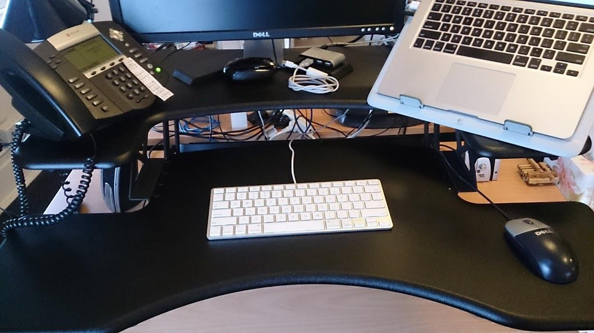
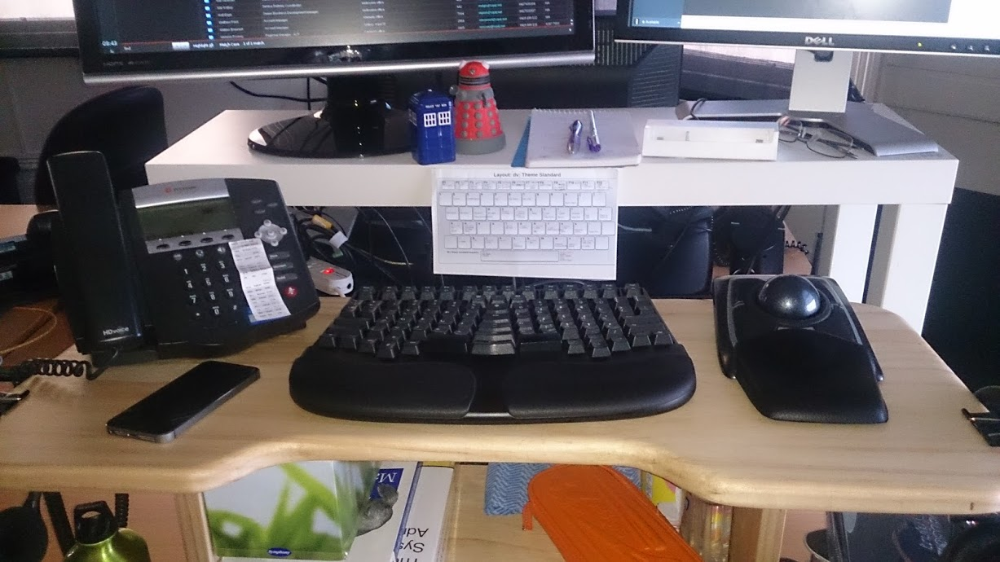
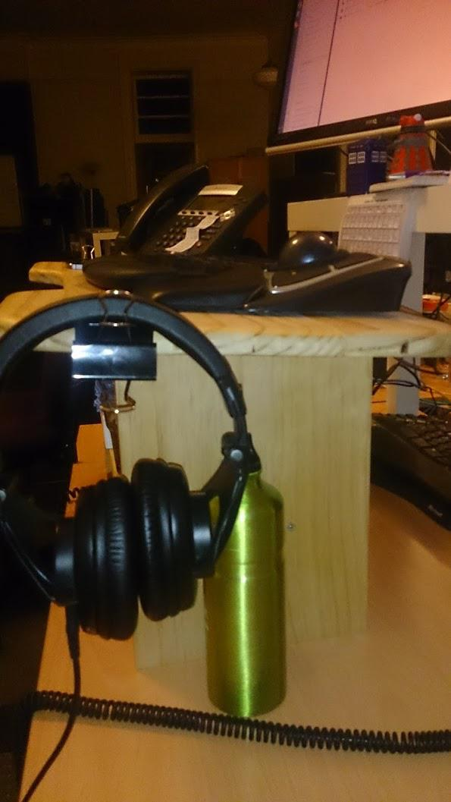
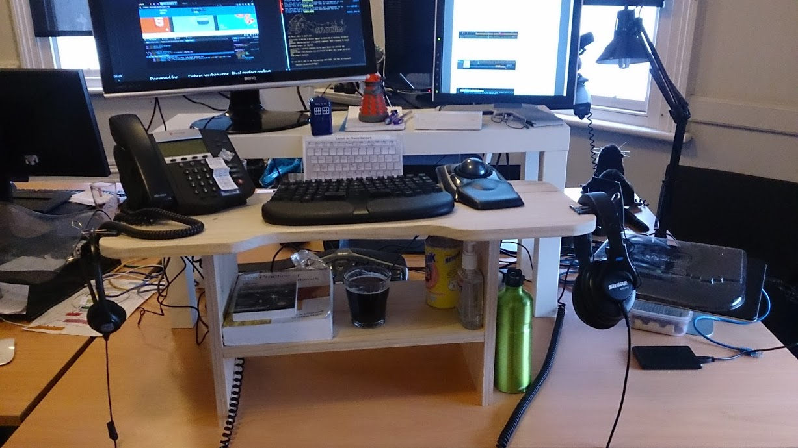

Standing Desks update
It's been about a year since I started standing at work, time for an update, mainly so I can show off the desktop I built a few months ago, which is working out quite nicely.
Making a real desktop
You may recall from my earlier post about standing desks that I was using a convenient cardboard box, with a table-top on it, and my TEK209 keyboard. I had played with sticking a book under the table-top to make a negative tilt, which is the only thing that the MS-4000 really has over the TEK. After a while, the box started to sag in the middle, and of course the book fell through with a loud bang. More than once. To much bemusement by my work colleagues.
So, having proven to myself that I can stand up for long times, and that I wasn't likely to return to sitting any time soon, it was time to build a proper standing desktop to replace the wobbly box.
Design
Here's a picture I took of a work colleague's fancy sit/stand desk:

What I really like about this desk is it's spacious design, and the curve at the front. It's quite inviting, and I like how the phone and the Mac sit apart from the keyboard and mouse. I was keen to build something like this, though not quite so large and bulky.
The new desk
I spent a week-end or so with a protractor, paint tins, jigsaw, some pine timber, dowel and glue. This is what I came up with:

It's not as deep as the professional model, but there's still plenty of room for a desk phone and the huge Kensington Expert Mouse trackball. The routered edges give a nice feel to the piece. It's been sanded and then polished with a bees-wax based floor wax to finish it off.
I didn't bother to build something that can be lowered, as the screens would be perched up high anyway. Because the desktop is static, I can place a shelf under the desktop, which is quite handy.
It also has built-in 15° negative tilt:

Note though that if I put the MS-4000 keyboard on it, not only is this negative tilt redundant (meaning I should remove the keyboard's front stand), things are pretty tight with that surfboard. There's a picture of the MS-4000 in the gallery.
But I don't think I'll be using the 4000 much any more, I love my TEK too much. I'll write my own review about it soonish: there are a few keyboard geeks who ask me about it.
I'm still standing
"Yeah, yeah, yeah …"
I think the only thing I need to invest in now, is a pair or two of really good shoes. I'm having no trouble standing all day, my posture is improving (still not great, but I'm working on it), and my energy levels are still a lot higher in the afternoon than they were when I was sitting. I have no complaints, and I know a couple people around the office have desk envy.

Comments